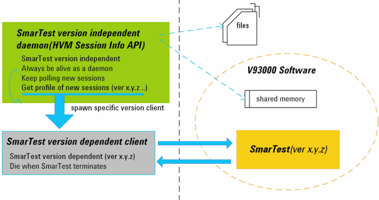

HVM session Info API
HVM session info API is provided to query the status of SmarTest sessions outside of SmarTest.
The HVM session Info API is independent of SmarTest and released as a separate rpm package. The
API's PingSmartestSessions and GetSmartestSessionProfile are
included.
They remain active even when SmarTest is killed, version-switched or uninstalled. Therefore, they can be used in a daemon process running all the time.
Use Model
The figure below shows the typical use model of an HVM session info API.
The SmarTest version independent daemon is created with the HVM session info API. You can retrieve a list of running SmarTest sessions and the session profiles. With the session information, you can trigger the execution of a SmarTest version dependent client. In the SmarTest version dependent client, you can use all the functionalities of the current SmarTest version.

In this model, the HVM session info daemon always stays alive and starts the appropriate client to communicate with SmarTest by monitoring the SmarTest session change.
Install Package
HVM session info API is released as a separate rpm package. After the installation, you will find the related files in the following directories:
- /opt/hp93000/soc_hvmapi/include/ includes the header files for the API;
- /opt/hp93000/soc_hvmapi/lib/ includes the archived library for the API;
- /opt/hp93000/soc_hvmapi/sh_lib/ includes the shared library for the API;
- /opt/hp93000/soc_hvmapi/examples/ includes the examples to use the
API.Note The client requires some time to start after it has been triggered. During this period, the client is not ready and cannot monitor the SmarTest status. Several clients may need to be developed for different SmarTest versions.
Functional changes
- Introduced in SmarTest 6.5.0